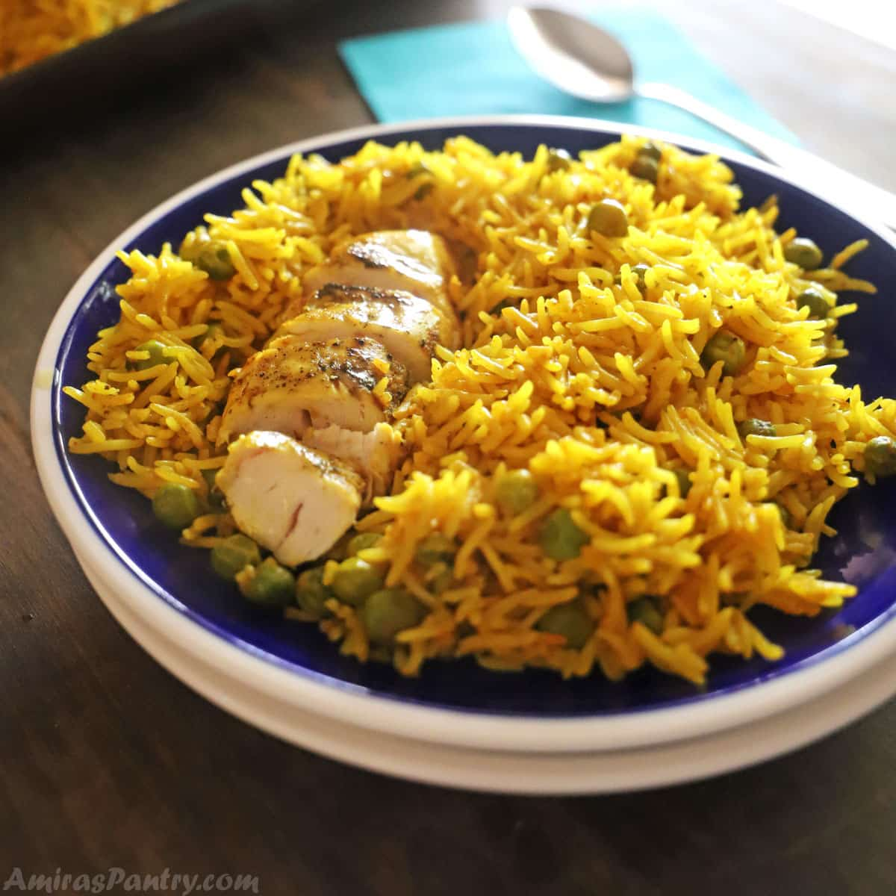

Chicken and Yellow Rice

Description
Basmati rice and chicken thighs, how can you go wrong? Throw it in a skillet and watch it turn into a treasure of gold for your belly!
- 4 bone-in chicken thighs
- 1 tbsp olive oil
- 1 cup white Basmati rice
- 2 ½ cups chicken stock
- 1 tbsp lemon juice
- ½ tbsp. turmeric powder
- fresh parsley or scallion, to garnish
Step by step instructions
- Mix the seasoning ingredients together, and generously rub them onto the chicken thighs.
- Heat the oil in a large non-stick skillet. Add the chicken and sear for about 4-5 minutes on each side.*
- Remove the chicken from the skillet. Add the rice, turmeric, lemon juice, and chicken stock.**
- Return the chicken to the skillet, bring to a boil, reduce the heat to low, and cover with a tight lid. Cook until the liquid is fully absorbed and the rice is cooked through, about 20 minutes.
- Turn off the heat, and let in rest with lid on, for another 5 minutes. Serve.